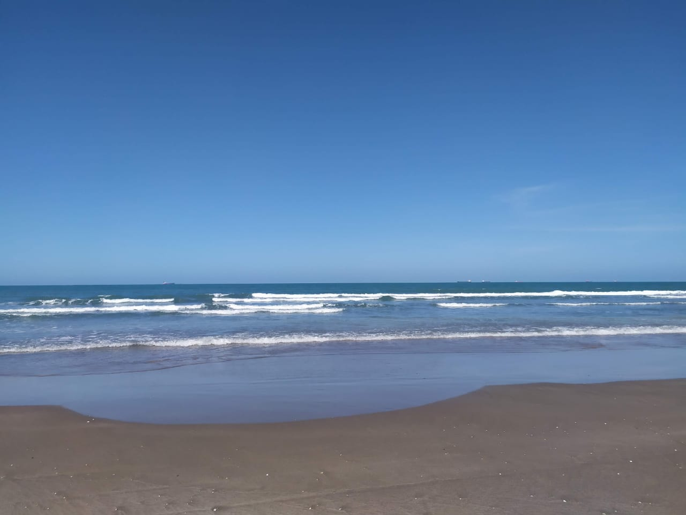
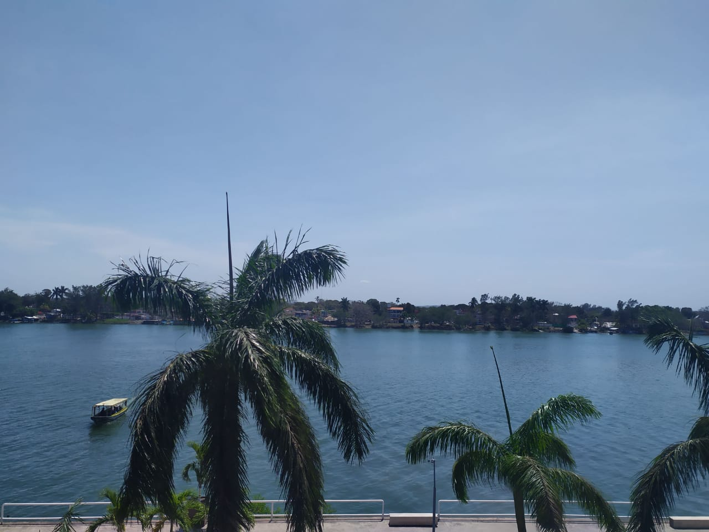

Tuxpan-Veracruz
Es un puerto al norte del estado de Veracruz, al que suelo ir con frecuencia ya que mis abuelos paternos viven ahí, es un lugar donde se pueden hacer distintas cosas, pero la que yo más disfruto es ir a la playa.
Me gusta disfrutar de la comida a base de mariscos frescos como los ostiones recién sacados del mal, o los diversos platillos que tiene para ofrecer el puerto de Tuxpan.

Las vistas desde el malecón son increíbles, es un lugar muy tranquilo donde puedes irte a relajar y pasear por todos los lugares que tiene para ofrecer.
